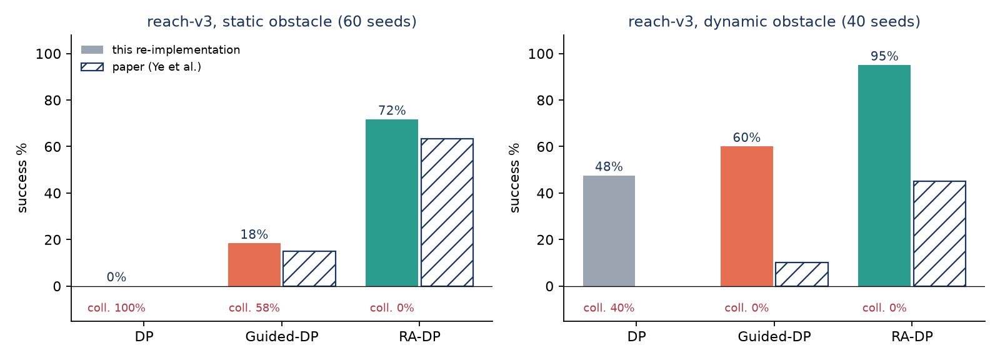

1 · What problem does the paper solve?
Diffusion policies are one of the best ways to teach a robot a skill from demonstrations. They produce smooth, natural motions and can represent tasks where there is more than one good way to move. But they have two habits that make them slow to react:
- They plan in chunks. The policy predicts a sequence of, say, 16 future actions, then executes the first 8 without looking. If something changes during those 8 steps (an obstacle appears, a person walks in), the robot keeps going.
- Each chunk is expensive. Producing a chunk means removing noise in many steps, each one a full pass through a neural network. In my implementation that is 10 network calls per chunk.
So the robot replans rarely and reacts late. And because it was trained only on demonstrations, it has never seen the obstacle it now has to avoid.
It does this by combining two ideas:
- An action queue at rising noise levels: the next action is almost clean, the last one is pure noise. One denoising step cleans the front action, which is executed, and fresh noise joins at the back.
- Training-free guidance: at each step, the gradient of an obstacle cost on the predicted path nudges the queue away from the obstacle.
2 · The ideas you need first
Each idea below is explained in plain words first, then with the equation it uses.
2.1 Imitation learning and action chunks
In imitation learning the robot learns a policy that maps what it observes, , to what it should do, from examples recorded by an expert. Instead of predicting one action at a time, modern policies predict an action chunk of future actions. Chunks give smoother motion and help the policy commit to one way of doing the task.
2.2 Diffusion models
A diffusion model learns to create data by learning to remove noise. During training, a clean example is mixed with random noise to a chosen noise level (from to ):
falls from 1 (clean) towards 0 (pure noise) as grows. A network learns to undo it. In this paper (and in my code) the network predicts the clean actions directly:
To generate a chunk, start from pure noise at level and repeatedly step down to lower noise levels until the chunk is clean.
2.3 DDIM: fewer, deterministic steps
Training uses noise levels, but sampling does not need to visit all of them. DDIM (Song et al., 2021) jumps from level to a lower level in one deterministic step, using the network's prediction :
RA-DP needs this step to work per action: each action in the queue moves from its own level to its own next level.
2.4 Diffusion Policy
Diffusion Policy (Chi et al., 2023) applies this to robots: the "data" is an action chunk, and the network is conditioned on the last few observations. In my baseline, the policy sees the last 2 observations, samples a 16-action chunk with 10 DDIM steps, and executes the first 8 actions before planning again. During those 8 steps it is blind.
2.5 Training-free guidance
Suppose you want the generated motion to avoid something the model never saw in training. Guidance adds a cost function (for example, "how close does this path come to the obstacle") and, during sampling, moves the noisy sample a little against the cost's gradient:
No retraining is needed; the network is unchanged. The catch is that in a chunked policy, guidance only acts when a new chunk is sampled, so it reacts every 8 steps at best.
2.6 Why a chunked policy cannot simply replan every step
You could sample a full new chunk at every step. But then each step costs 10 network calls instead of one, so the robot slows down by about 10×, and consecutive chunks may disagree, which makes the motion jerky. RA-DP's contribution is to get per-step replanning at the cost of one call per step, with plans that stay consistent from step to step.
3 · How RA-DP works
3.1 The noise-level queue
RA-DP keeps a queue of actions, each at a different noise level. With levels and step size , the levels form a staircase:
At every control step the network is called once on the whole queue, and every action moves down one stair (). The front action reaches level 0, so it is clean: it is executed and removed. A new action of pure noise (level 96) joins the back. The staircase is restored, ready for the next step.
Live: the top row is the RA-DP queue; darker = noisier. The bottom rows count network calls per control step: plain DP spends 10 calls every 8 steps and is blind in between; RA-DP spends 1 call every step.
3.2 Training with a different noise level for each action
A normal diffusion policy trains with one noise level for the whole chunk. That network has never seen a chunk whose actions sit at different noise levels, so the queue would confuse it. RA-DP trains with a noise level per action. The paper mixes two kinds of level patterns: increasing ones like the staircase (so the network learns the queue it will meet) and independent random ones (so it stays general).
3.3 Guidance at every step
Because the whole queue is refreshed every step, guidance can act every step too. The cost penalises predicted end-effector positions that come within a safety radius of an obstacle:
where is the hand position after the first predicted actions, is the obstacle centre at that time, and is the sigmoid. The queue is then pushed against the gradient :
Start-up (warm-up). The very first queue is pure noise at level 96 everywhere. It is denoised in a few calls until each action reaches its stair, and only then does the loop begin. This happens once per episode.
Why plans stay consistent. The queue carries over from step to step: the action that will run in 5 steps has already been partly formed over the previous 11 steps. The plan is refined, not redrawn, so the motion stays smooth even though it is updated every step.
4 · How I implemented it, step by step
No official code was released, so everything below was written from the paper. Each step names the file. Where the paper leaves a choice open, I state mine.
Task, robot and demonstrations
MetaWorld (v3.1.1, MuJoCo) with its Sawyer arm, as in the paper. The policy sees a 39-number observation (hand position, gripper, object and goal positions, and the previous frame) and outputs 4 numbers: a hand displacement (each unit = 1 cm) and a gripper command. Training data: 10 demonstrations of reach-v3 from MetaWorld's scripted expert, with no obstacles.
The obstacle is a sphere of radius 3.5 cm placed on the straight hand-to-goal path, 35–60% of the way along. The moving obstacle sways sideways ±6 cm across the path. A run succeeds if the hand reaches the goal without touching the obstacle.
The network: a 1-D U-Net with a noise level per action
A temporal U-Net over the 16 actions (channels 128, 256, 256), conditioned with FiLM (a learned scale and shift). The change RA-DP needs: the noise-level embedding is a sequence, one per action, applied position by position. With all levels equal it reduces to the standard Diffusion Policy network.
e = self.k_mlp(sin_emb(k, 64)).transpose(1, 2) # k: (B, 16) -> one embedding per action cond = torch.cat([obs_emb.expand(-1, -1, T), e], 1) # observation (same for all) + own noise level h = h * (1 + scale) + shift # FiLM, per position
Training
levels, squared-cosine schedule, , 2 observations of history, 8,000 iterations, batch 256, AdamW at , an exponential moving average of the weights. Two checkpoints from the same data: --mode dp (one level per chunk) and --mode radp (one level per action).
The paper gives a mixing ratio of 0.6 between its two level patterns but does not say which way round. I read it as 60% increasing and 40% independent:
ind = torch.randint(1, K + 1, (B, H)) # independent level per action mono = torch.sort(torch.randint(1, K + 1, (B, H)), 1).values # increasing, like the queue k = torch.where(torch.rand(B, 1) < 0.6, mono, ind)
Baselines: DP and Guided-DP
DP: sample a 16-action chunk with 10 DDIM steps, execute 8, repeat. Guided-DP: the same, with the obstacle guidance applied inside each DDIM step, so it reacts once per chunk (every 8 steps).
RA-DP inference: the queue
The core of the paper fits in a few lines. stair holds the levels 6, 12, ..., 96.
a0 = self.predict(queue, self.stair, obs) # ONE network call a = self.sch.ddim_step(queue, a0, self.stair, self.stair - self.tau) # every level drops by 6 a = self._guide(a, a0, guide, self.eta) # obstacle guidance front = a[0, 0] # now clean: execute it self.queue = torch.cat([a[:, 1:], torch.randn(1, 1, ACT_DIM)], 1) # fresh noise at the back
Guidance and the obstacle cost
The predicted hand path is the current hand position plus the running sum of predicted displacements. Two places where I had to depart from the literal paper:
- Distance units. The paper's is in units it does not define. I measure distance in units of the safety radius (obstacle + hand + 2 cm), so means touching the safety sphere, with , .
- Step direction. The literal update explodes when the gradient is tiny (far from the obstacle). I use the unit direction , and only when the cost is above .
d2 = ((pos - centres) ** 2).sum(-1) / R ** 2 # distance in safety-radius units f = (torch.sigmoid(-(d2 - 1.0) * lam) * omega).sum() A_next = A_next - eta * g / g.norm() # paper writes g / ||g||^2
The paper's guidance step worked as published. Smaller values (, ) did not steer at all. All tuning was done on separate seeds (500 and up), never on the test seeds 0–59.
Evaluation and timing
60 seeds for no obstacle and static obstacle, 40 for the moving obstacle, the same seeds for every method. Replanning rate = how many times per second the plan is refreshed, measured on an RTX 4060 laptop (about 12 ms per network call).
Interactive demos
A desktop MuJoCo viewer with a control panel to add, move and animate obstacles while the arm is moving, and a browser version that places the Sawyer in a photo-realistic room rebuilt from a phone video (Gaussian splatting). In both, the obstacle positions can come from the simulator (exact, as in the paper) or from a simulated colour-and-depth camera, which is where the perception results in Section 7 come from.
5 · Results
| reach-v3 | DP | Guided-DP | RA-DP | Paper (Guided-DP → RA-DP) |
|---|---|---|---|---|
| No obstacle (60 seeds) | 80.0% | n/a | 86.7% | n/a |
| Static obstacle (60 seeds) | 0% · 100% collide | 18.3% · 58% collide | 71.7% · 0 collisions | 15.0% → 63.3% |
| Moving obstacle (40 seeds) | 47.5% · 40% collide | 60.0% · 0 collisions | 95.0% · 0 collisions | 10.0% → 45.0% |
| Replanning rate | 8.1 Hz | 8.1 Hz | 83.9 Hz (~10×) | 36.7 → 130.9 Hz |
Success = goal reached without touching the obstacle. The policies were trained on 10 demonstrations with no obstacles; the obstacle is known only to the guidance at test time.

- Same as the paper: the ranking of the three methods, and a similar gap on the static obstacle (18% → 72% here, 15% → 63% in the paper).
- Guidance alone is not enough. Guided-DP knows about the obstacle but only acts every 8 steps; it still hit the static obstacle in 58% of runs. RA-DP, with the same guidance applied every step, never touched it.
- Speed: RA-DP refreshes its plan about 10 times as often as DP. The paper's ratio is about 3.6× against its Guided-DP; my absolute numbers are lower because of the laptop GPU.
- Moving obstacle: my obstacle is easier than the paper's, so all three scores are higher. Only the ranking is comparable.
Code and data: GitHub repository (link to add)
6 · Extension: four kinds of fault, five phases of a task
The paper tests one kind of disturbance: an obstacle the policy did not expect. Real robots fail for more reasons than that. I used the re-implementation to ask a broader question: which kinds of fault does fast replanning absorb, and which does it not?
The task is pick-place-v3: reach, grasp, lift, move and place. Both policies were trained the same way on pick-place demonstrations. In each run, one fault is switched on during one phase only (the phase is detected from the gripper signal and the object's height):
| Category | Fault injected | What it stands for on a real robot |
|---|---|---|
| Perception | the object is reported 3 cm off, plus small noise | camera calibration drift, depth error |
| Policy | strong random noise added to the policy's actions | a policy that acts badly in states it was not trained for |
| Hardware | actions arrive 4 steps late and only half the motion happens | servo latency and torque saturation |
| Contact | object friction × 0.05 and mass × 5 | a slippery, heavy object |

| Fault (DP / RA-DP) | Reach | Grasp | Lift | Move | Place |
|---|---|---|---|---|---|
| Perception | 13 / 8 | 100 / 92 | 100 / 100 | 100 / 100 | 100 / 100 |
| Policy | 26 / 29 | 87 / 88 | 91 / 100 | 95 / 100 | 96 / 96 |
| Hardware | 91 / 100 | 87 / 96 | 91 / 100 | 95 / 100 | 100 / 100 |
| Contact | 100 / 100 | 96 / 100 | 100 / 100 | 100 / 100 | 96 / 100 |
- RA-DP absorbs hardware faults. When an action arrives late or weak, RA-DP sees the result at the next step and corrects it. It never fell below 96%; plain DP, blind for 8 steps at a time, fell to 87–91%.
- Nothing absorbs a perception fault during Reach. Both policies fell to about 10%. They replan perfectly, towards the wrong place, and grasp where they think the object is. When the fault ends, it is too late.
- Reach is the most sensitive phase for perception and policy faults, because a mistake there is carried into the grasp.
- The contact fault was too weak to matter. MetaWorld's gripper holds very firmly; this category needs a better test.
7 · What this means for failure categories
This is the link to my own work on categorising robot failures. A company that sees its robot fail usually labels the failure videos and retrains the policy on them. That only helps if the failure was the policy's fault. The results above suggest that RA-DP's fast replanning can be used as a test to separate one category from the rest.
| Category | Does fast replanning recover it? | Evidence above | Separated by this test? |
|---|---|---|---|
| Hardware | Yes | RA-DP 96–100% vs DP 87–91% | Yes |
| Perception | No | Reach: 13% / 8% | No: the two look the same |
| Policy | No | Reach: 26% / 29% | |
| Contact | Unknown | fault too weak in MetaWorld | Not yet tested |
What RA-DP cannot tell apart. A perception fault and a policy fault both defeat replanning: in both cases the robot acts confidently on a wrong plan. To tell them apart you need to know where the object really was, which the robot's log does not record. I propose ways to measure it (an independent second estimate, a replay with the corrected position, and a planner that sees only what the policy saw) on the failure attribution page.
There is also live evidence of a perception gap in this re-implementation. With the simulated colour-and-depth camera, an obstacle in clear view is located within 3–7 mm. When the arm blocks the view, the estimate shrinks and shifts by 2–3 cm, which is about the size of the perception fault that removed 90% of successes above. It appears only in some phases, so it is hard to see in a video.
8 · Honest limits
- Simulation only (MetaWorld). Nothing here has run on a real arm.
- The moving obstacle is easier than the paper's, so those scores are not comparable; only the ranking is. Its future motion is assumed known to the guidance.
- Two changes from the literal paper: distance in safety-radius units instead of the paper's undefined , and a unit-direction guidance step instead of , which was unstable.
- The 0.6 schedule-mixing ratio is my reading of an ambiguous sentence (60% increasing, 40% independent).
- Replanning rates depend on the hardware; compare ratios, not absolute numbers.
- Fault test: about 23 runs per cell, so a 4-point difference is one run. My first phase detector was wrong (it never found the grasp phase, because the hand point sits about 4 cm above the object); it was fixed and the test rerun, and the old file is kept.
- The contact fault was too weak to test, and the faults are injected, not real.